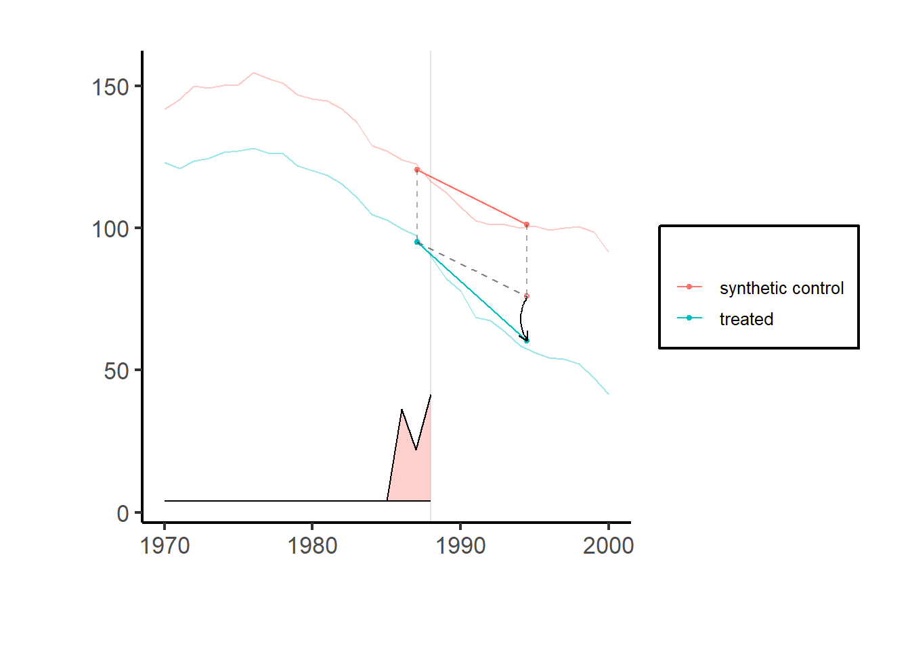
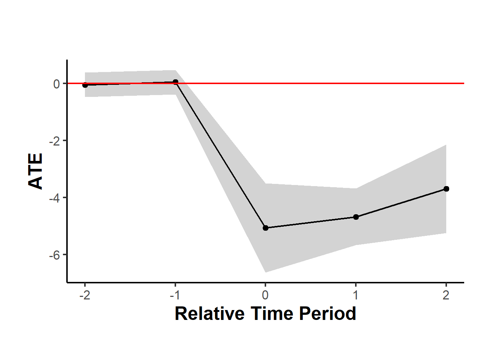
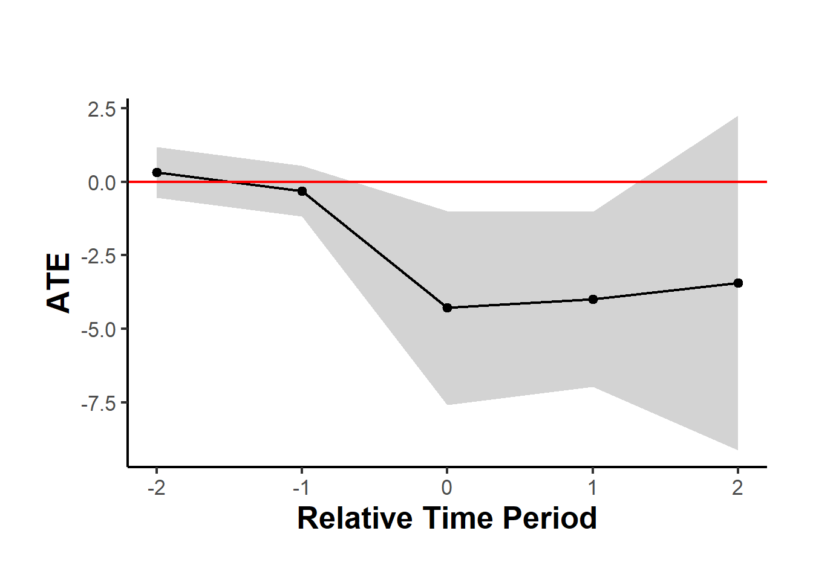

38 Synthetic Difference-in-Differences
A note on why SDID appears before DiD and Synthetic Control in this book. We sequence the panel-data chapters in order of design credibility rather than chronology of development. SDID hybridizes Difference-in-Differences and Synthetic Control, reweighting both units and time periods so that the estimator remains well-behaved whenever either the parallel-trends assumption (needed for DiD) or the convex-hull pre-treatment match (needed for SC) holds. In practice that gives SDID a larger envelope of credibility than either parent method. Readers who are new to DiD or SC may want to skim the Difference-in-Differences and Synthetic Control chapters first for the respective intuitions, then return here.
Understanding the impact of policy interventions is a fundamental challenge in empirical research. Analysts frequently rely on panel data, which tracks multiple units over time, to assess how outcomes change before and after a policy is implemented. However, estimating causal effects in this setting is complicated by the fact that policies are often adopted non-randomly, where certain units may be more likely to receive treatment based on their characteristics, prior trends, or external factors. If treatment assignment correlates with unit-specific or time-specific factors, selection bias can invalidate causal conclusions, even when observed covariates are accounted for (Imbens and Rubin 2015).
A well-established approach to dealing with this challenge is the Difference-in-Differences (DID) method, which compares changes in outcomes between treated and untreated groups. However, DID relies on the crucial parallel trends assumption (the idea that, in the absence of treatment, treated and untreated units would have followed similar trajectories). When this assumption is violated, DID can produce biased estimates.
An alternative approach, Synthetic Control (SC), is particularly useful when only a few units receive treatment. Instead of assuming parallel trends, SC constructs a weighted combination of untreated units that best approximates the pre-treatment behavior of the treated group. This method improves comparability but has limitations, including sensitivity to extrapolation and instability when there are many control units.
To address the shortcomings of both DID and SC, Synthetic Difference-in-Differences (SDID) was introduced by Arkhangelsky et al. (2021). SDID is a weighted double-differencing estimator that:
- Combines features of DID and SC to improve causal inference.
- Adjusts for differences in pre-treatment trends through reweighting (like SC).
- Remains invariant to additive unit-level shifts and is valid for large panels (like DID).
The key advantage of SDID is that it is robust in a “double” sense (not to be confused with the formal doubly robust property of augmented inverse-propensity-weighting estimators, which requires only one of the outcome or propensity models to be correctly specified). SDID is “doubly robust” in the operational sense that it remains consistent under either the DID identifying assumption (parallel trends) or the Synthetic Control identifying assumption (pre-treatment fit inside the donor convex hull), and it corrects for deviations from parallel trends by using synthetic weights (Table 38.1). This makes SDID particularly useful in situations where treatment assignment is correlated with latent factors that affect outcomes over time.
- SDID explicitly accounts for systematic unit-level effects that influence treatment assignment.
- This is especially valuable when treatment is non-randomly assigned based on persistent unit characteristics.
- Even under purely random treatment assignment, all three methods (DID, SC, and SDID) are unbiased, but SDID achieves the smallest standard errors.
Recent research has applied SDID to evaluate marketing interventions and policy changes:
- TV Advertising and online sales (Lambrecht et al. 2024): SDID was used to estimate the effect of TV ad campaigns on consumer behavior, accounting for time-varying confounders.
- Soda Tax and marketing effectiveness (Keller et al. 2024): SDID helped measure how soda tax policies influenced marketing strategies and consumer demand.
| Method | Assumptions | Use Case | Strengths | Weaknesses |
|---|---|---|---|---|
| DID | Parallel trends assumption | Many treated units | Simple implementation, valid for large panels | Fails when parallel trends assumption is violated |
| SC | Reweighting to match pre-treatment trends | Few treated units | More flexible, compensates for lack of parallel trends | Sensitive to outliers, does not scale well with large treated groups |
Attractive Features of SDID
- Statistical Properties
- Provides consistent and asymptotically normal estimates.
- Achieves double robustness, similar to augmented inverse probability weighting estimators Scharfstein et al. (1999).
- Performance Comparison
- In settings where DID is valid, SDID performs at least as well or better.
- Unlike DID, SDID remains valid when treatment assignment correlates with latent unit-level or time-varying factors.
- In settings where SC is used, SDID performs equally well or better.
- When treatment is randomly assigned, all methods remain unbiased, but SDID tends to have higher precision.
- Bias Reduction
- Related to Augmented SC
- Shares methodological similarities with augmented SC estimators (Ben-Michael et al. 2021; Arkhangelsky et al. 2021, 4112).
- Recommended Use Cases
SDID is particularly effective when:- The number of control units (\(N_{ctr}\)) is similar to the number of pre-treatment periods (\(T_{pre}\)).
- The number of post-treatment periods (\(T_{post}\)) is small.
- The number of treated units (\(N_{tr}\)) satisfies:
\[ N_{tr} < \sqrt{N_{ctr}} \]
38.1 Understanding
Having seen why SDID hybridises DiD and synthetic control, we now look at how. The core construction is to layer two sets of weights, one over units, one over time, onto a standard two-way fixed-effects regression, so that the comparison group ends up tracking the treated trajectory before treatment and the inference is anchored on the most informative post-treatment periods.
To formally define the SDID estimator, we begin by considering a balanced panel dataset with \(N\) units observed over \(T\) time periods. Our goal is to estimate the causal effect of a treatment intervention while accounting for both unit-specific and time-specific confounders.
Let:
- \(Y_{it}\) be the outcome variable for unit \(i\) at time \(t\).
- \(W_{it} \in \{0,1\}\) be a binary indicator of treatment, where \(W_{it} = 1\) if unit \(i\) is treated at time \(t\) and \(0\) otherwise.
- The panel consists of:
- \(N_c\) control units (never treated).
- \(N_t\) treated units, exposed to treatment after period \(T_{pre}\).
38.1.1 Steps in SDID Estimation
SDID combines ideas from both SC and DID by introducing unit weights and time weights. Reading the steps below, it helps to keep one mental picture in mind: standard two-way fixed effects gives every unit and every period the same vote in the regression, whereas SDID quietly redistributes those votes so that the comparison group looks like the treated group before treatment, and the comparison periods look like the post-treatment periods. Everything else is bookkeeping.
Find unit weights \(\hat{w}_i^{sdid}\) to ensure that pre-treatment outcomes of the weighted control group match the pre-treatment outcomes of the treated units:
\[ \sum_{i = 1}^{N_c} \hat{w}_i^{sdid} Y_{it} \approx \frac{1}{N_t} \sum_{i = N_c + 1}^{N} Y_{it}, \quad \forall t = 1, \dots, T_{pre} \]
This ensures that pre-treatment trends of treated and control units are similar, just as in SC. Intuitively, the weights pick out the subset of donors whose pre-treatment trajectory, taken as a weighted average, traces the same shape as the treated trajectory. A donor that was already moving in lockstep with the treated unit gets a large weight; a donor that was drifting in a different direction gets a small one or zero. The procedure does not demand that the weighted donor sits exactly on top of the treated series in levels (the unit fixed effects in the final regression will absorb a constant gap), only that the two series move in parallel.Find time weights \(\hat{\lambda}_t^{sdid}\) to balance post-treatment deviations from pre-treatment outcomes, stabilizing the inference. The asymmetry with unit weights is deliberate: unit weights ask which donors look like the treated unit, while time weights ask which pre-treatment periods look like the post-treatment period. A pre-period that resembles the post-period (in terms of seasonal pattern, business-cycle position, or any other persistent factor that the donors share) is more informative for forecasting the missing counterfactual and accordingly receives a larger weight. Periods that are wildly atypical (an outlier recession year, a one-off shock) get down-weighted because they would otherwise pull the implied counterfactual toward something the post-period is not.
-
Estimate the treatment effect \(\hat{\tau}^{sdid}\) by solving the following minimization problem:
\[ (\hat{\tau}^{sdid}, \hat{\mu}, \hat{\alpha}, \hat{\beta}) = \arg \min_{\tau, \mu, \alpha, \beta} \sum_{i=1}^{N} \sum_{t=1}^{T} (Y_{it} - \mu - \alpha_i - \beta_t - W_{it} \tau)^2 \hat{w}_i^{sdid} \hat{\lambda}_t^{sdid} \]
where:- \(\mu\) is the global intercept.
- \(\alpha_i\) captures unit-specific fixed effects.
- \(\beta_t\) captures time-specific fixed effects.
- \(\tau\) represents the treatment effect.
The objective is a weighted two-way fixed effects regression, with each cell of the panel weighted by the product \(\hat{w}_i^{sdid} \hat{\lambda}_t^{sdid}\). That product collapses to ordinary DID when both sets of weights are uniform, and to SC when only the unit weights are non-uniform and the unit fixed effects are dropped. SDID lives between those two limits.
Unlike the standard DID and SC estimators, SDID incorporates both unit and time weights, making it less sensitive to violations of parallel trends. The conceptual gain is that the parallel-trends assumption is no longer asked to hold for the raw panel, where it routinely fails, but only after the data have been reweighted into a configuration where it is much more plausible. This is the same logic that motivates matching methods in cross-sectional designs: rather than insisting that conditional ignorability holds across the entire sample, restrict attention to the subset where the implied comparison is credible.
It is illuminating to write the three estimators as variations on a single objective function and read off what each one is doing.
DID solves:
\[
(\hat{\tau}^{did}, \hat{\mu}, \hat{\alpha}, \hat{\beta}) = \arg \min_{\tau, \mu, \alpha, \beta} \sum_{i=1}^{N} \sum_{t=1}^{T} (Y_{it} - \mu - \alpha_i - \beta_t - W_{it} \tau)^2
\]
However, DID does not use unit or time weights, making it unreliable if treatment assignment correlates with unobserved factors. Every observation enters the regression with equal weight, which is fine when the panel is roughly homogeneous and trends are flat, and exactly the wrong thing when one or two donors are dragging the comparison group’s trajectory in a direction the treated unit was never on.
SC minimizes:
\[
(\hat{\tau}^{sc}, \hat{\mu}, \hat{\beta}) = \arg \min_{\tau, \mu, \beta} \sum_{i=1}^{N} \sum_{t=1}^{T} (Y_{it} - \mu - \beta_t - W_{it} \tau)^2 \hat{w}_i^{sdid}
\]
SC does not include unit fixed effects (\(\alpha_i\)) or time weights (\(\hat{\lambda}_t\)), which can introduce bias when unmeasured confounders vary over time. The omission of unit fixed effects is also why classical SC has to match the treated unit in levels, not merely in trend, since there is no \(\alpha_i\) left to soak up a residual gap. SDID restores both the unit fixed effects and the time weights, recovering the bias control of DID and the comparability of SC in the same objective.
38.1.2 Comparison of Methods
Table 38.2 summarizes key differences between DID, SC, and SDID:
| DID | SC | SDID | |
|---|---|---|---|
| Primary Assumption | Absence of intervention leads to parallel evolution across states. | Reweights unexposed states to match pre-intervention outcomes of treated state. | Reweights control units to ensure a parallel time trend with the treated pre-intervention trend. |
| Reliability Concern | Can be unreliable when pre-intervention trends aren’t parallel. | Accounts for non-parallel pre-intervention trends by reweighting. | Uses reweighting to adjust for non-parallel pre-intervention trends. |
| Treatment of Time Periods | All pre-treatment periods are given equal weight. | Doesn’t specifically emphasize equal weight for pre-treatment periods. | Focuses only on a subset of pre-intervention time periods, selected based on historical outcomes. |
| Goal with Reweighting | N/A (doesn’t use reweighting). | To match treated state as closely as possible before the intervention. | Make trends of control units parallel (not necessarily identical) to the treated pre-intervention. |
A second, more transparent formulation of the SDID treatment effect makes the connection to ordinary DID almost mechanical:
\[
\hat{\tau} = \hat{\delta}_t - \sum_{i = 1}^{N_c} \hat{w}_i^{sdid} \hat{\delta}_i
\]
where:
- \(\hat{\delta}_t = \frac{1}{N_t} \sum_{i = N_c + 1}^{N} \hat{\delta}_i\) represents the average deviation in treated units post-treatment (Table 38.3).
- \(\sum_{i = 1}^{N_c} \hat{w}_i^{sdid} \hat{\delta}_i\) adjusts for differences using weighted control unit deviations.
Read this as a difference-in-differences, except that “the control group’s change” is computed using the synthetic donor weights and “the change” itself is computed using the synthetic time weights (rather than a flat pre-period average). Table 38.3 makes the family resemblance explicit: every estimator in the SC, DID, and SDID lineage takes the same generic shape (treated change minus weighted control change), and they differ only in which weights are used and how the change is summarized over time.
| Method | Sample Weight | Adjusted outcomes (\(\hat{\delta}_i\)) | Interpretation |
|---|---|---|---|
| SC | \(\hat{w}^{sc} = \min_{w \in R}l_{unit}(w)\) | \(\frac{1}{T_{post}} \sum_{t = T_{pre} + 1}^T Y_{it}\) | Unweighted treatment period averages |
| DID | \(\hat{w}_i^{did} = N_c^{-1}\) | \(\frac{1}{T_{post}} \sum_{t = T_{pre}+ 1}^T Y_{it} - \frac{1}{T_{pre}} \sum_{t = 1}^{T_{pre}}Y_{it}\) | Unweighted differences between average treatment period and pretreatment outcome |
| SDID | \((\hat{w}_0, \hat{w}^{sdid}) = \min l_{unit}(w_0, w)\) | \(\frac{1}{T_{post}} \sum_{t = T_{pre} + 1}^T Y_{it} - \sum_{t = 1}^{T_{pre}} \hat{\lambda}_t^{sdid} Y_{it}\) | Weighted differences between average treatment period and pretreatment outcome |
A key innovation in Synthetic Difference-in-Differences is its use of unit and time weights to refine causal estimates. By applying weights, SDID essentially localizes a standard two-way fixed effects regression, making it more robust and precise. The word “localize” is doing real work here: rather than running one global regression on the full panel and hoping that the parallel-trends assumption holds across every donor and every period, SDID zooms in on the slice of the panel where parallel trends is most defensible.
38.1.3 Why Use Weights?
The weighting strategy is best understood as two complementary localizations of the regression, one over units and one over time.
- Unit weights (\(\hat{w}_i^{sdid}\)) emphasize control units that are most similar to the treated units based on pre-treatment trends. They answer the question “if the treated unit had not been treated, which donors would have predicted its trajectory?” and hand more vote to those donors.
- Time weights (\(\hat{\lambda}_t^{sdid}\)) prioritize time periods most comparable to the post-treatment period. They answer a closely related question, “which pre-periods are the right baseline for measuring the post-period?”, and they discount pre-periods that look like a different regime entirely.
- This approach improves parallel trends validity without requiring a perfect match in raw data. It is the same spirit as covariate balancing in matching methods, but operating on the panel structure itself rather than on cross-sectional covariates.
38.1.4 Benefits of Localization in SDID
- Robustness
- By focusing on comparable units and time periods, SDID reduces bias from dissimilar observations.
- Improved Precision
38.1.5 Designing SDID Weights
The two sets of weights are designed to solve related but distinct problems, which is why they are estimated separately and with different penalties. Unit weights are about who you compare against; time weights are about when the comparison is anchored.
38.1.5.1 Unit Weights: Balancing Pre-Treatment Trends
Unit weights \(\hat{w}_i^{sdid}\) ensure that the weighted control group mimics the treated group’s pre-treatment trends, similar to SC but with greater flexibility:
\[
\sum_{i = 1}^{N_c} \hat{w}_i^{sdid} Y_{it} \approx \frac{1}{N_t} \sum_{i = N_c + 1}^{N} Y_{it}, \quad \forall t = 1, \dots, T_{pre}
\]
This helps achieve parallel pre-treatment trends rather than requiring an exact match in levels. The relaxation from level-matching to trend-matching is what makes SDID feasible in panels where classical SC struggles, because it is much easier to find a weighted donor whose changes track the treated unit’s changes than one whose levels coincide with the treated unit’s levels. The unit fixed effects in the final regression carry the residual level difference for free.
38.1.5.2 Time Weights: Stabilizing Post-Treatment Inference
Time weights \(\hat{\lambda}_t^{sdid}\) ensure that post-treatment deviations are balanced relative to pre-treatment trends. This minimizes bias by down-weighting time periods that are vastly different from the post-treatment period. The motivation is straightforward: if you want to know what the treated unit’s post-period would have looked like absent treatment, you should anchor the counterfactual on pre-periods that resemble the post-period along whatever latent factors govern the donors’ outcomes, not on a generic average of all pre-periods.
- Unlike unit weights, time weights do not require regularization because outcomes within the same time period are highly correlated across units. The cross-sectional correlation structure already pins the solution down, so the regularizer would be solving a problem that does not exist.
- Time weights improve the precision of SDID estimates by preventing certain periods from dominating the estimation process. This is the source of the variance reduction relative to ordinary DID: noisy pre-periods that would have inflated the residual variance get demoted, and the estimator is left with a cleaner baseline against which to measure the post-treatment shift.
38.1.6 How SDID Enhances DID’s Plausibility
DID assumes parallel trends, but raw data often violates this assumption. SDID corrects for non-parallel trends by weighting both units and time periods. The practical question that applied researchers have always asked when faced with a failing pre-trends test is “which donors and which periods should I trim, and on what principled basis?” The traditional answers have ranged from inspection by eye to robustness checks across alternative comparison groups, with all the discretion that implies.
- Similar techniques have been used before to adjust DID assumptions, such as controlling for covariates or selecting specific time periods (Callaway and Sant’Anna 2021).
- SDID automates this process, applying a systematic weighting approach for both units and time periods.
The systematization matters: because the weights come out of an explicit optimization problem rather than analyst judgment, the resulting estimator is reproducible and the inference machinery can be derived without ad hoc adjustments. This puts SDID into the same family as the other modern DiD estimators that try to discipline the comparison group rather than trust the raw panel.
Including unit fixed effects (\(\alpha_i\)) in SDID has two main advantages:
- Flexibility: allows for systematic differences across units while preserving parallel trends after reweighting.
- Enhanced Precision: explains a large fraction of the variation in outcomes, reducing noise and improving estimation accuracy.
Unit Fixed Effects and SC Weighting
- Under ideal conditions, SC reweighting alone could account for unit fixed effects, if the weighted average of control unit outcomes perfectly matched the treated unit’s pre-treatment trajectory.
- However, this rarely happens in reality, making unit fixed effects necessary for robust inference.
- The use of fixed effects in synthetic control regressions (SC with intercept) was first proposed in Doudchenko and Imbens (2016) and Ferman and Pinto (2021), where it was referred to as DIFP (Difference-in-Fixed-Effects Prediction).
38.1.7 Choosing SDID Weights
- Choosing Unit Weights
Regularization Parameter:
- The penalty term is calibrated based on the typical one-period change in control unit outcomes during the pre-treatment period.
- This value is then multiplied by a scaling factor (Arkhangelsky et al. 2021, 4092).
Relation to Synthetic Control Weights:
SDID weights resemble those used in Abadie et al. (2010) but have two key modifications:
- Inclusion of an Intercept Term
- Unlike SC, SDID does not force the control pre-trends to exactly match the treated pre-trends. It only ensures they are parallel.
- This flexibility arises from unit fixed effects, which absorb any systematic level differences.
- Regularization Penalty
- Borrowed from Doudchenko and Imbens (2016).
- Ensures dispersion of weights, preventing over-reliance on a few control units.
- This guarantees a unique solution for unit weights.
How SDID Compares to DID Weights:
- DID weights are a special case of SC weights without an intercept or regularization penalty.
- DID applies unit weights as in SC but only when there is one treated unit.
- Choosing Time Weights
- Like unit weights, time weights include an intercept term to account for overall time effects.
- No regularization is applied to time weights because within-period correlations across units are expected.
- This design allows SDID to minimize bias while stabilizing inference.
38.1.8 Accounting for Time-Varying Covariates in Weight Estimation
To further refine the estimation process, SDID can incorporate time-varying covariates by adjusting the outcome variable:
\[ Y_{it}^{res} = Y_{it} - X_{it} \hat{\beta} \]
where \(\hat{\beta}\) comes from the regression:
\[ Y_{it} = X_{it} \beta + \varepsilon_{it} \]
This residualized outcome (\(Y_{it}^{res}\)) ensures that the weighting process accounts for time-varying confounders, improving the validity of causal estimates.
38.2 Application
SDID Algorithm
The SDID algorithm runs in several stages, computed in a deliberate order: first set the regularization scale, then solve for unit weights, then solve for time weights, then plug both into the weighted regression. The reason the regularizer is computed first is that it depends only on the donors’ own pre-treatment volatility, which is a property of the data, not of the treated unit, so it can be estimated once and reused.
- Compute regularization parameter \(\zeta\)
\[ \zeta = (N_{t}T_{post})^{1/4} \hat{\sigma} \]
where
\[ \hat{\sigma}^2 = \frac{1}{N_c(T_{pre}- 1)} \sum_{i = 1}^{N_c} \sum_{t = 1}^{T_{pre}-1}(\Delta_{it} - \hat{\Delta})^2 \]
\(\Delta_{it} = Y_{i(t + 1)} - Y_{it}\)
\(\hat{\Delta} = \frac{1}{N_c(T_{pre} - 1)}\sum_{i = 1}^{N_c}\sum_{t = 1}^{T_{pre}-1} \Delta_{it}\)
The quantity \(\hat{\sigma}\) is just the standard deviation of one-period changes in the control panel, so \(\zeta\) scales with the natural noise level of the donors’ own dynamics. Penalizing weights at this scale prevents the optimizer from concentrating mass on a single donor that happened to track the treated unit perfectly by chance, which would be the cross-sectional analog of overfitting.
- Compute unit weights \(\hat{w}^{sdid}\)
\[ (\hat{w}_0, \hat{w}^{sdid}) = \arg \min_{w_0 \in R, w \in \Omega}l_{unit}(w_0, w) \]
where
\(l_{unit} (w_0, w) = \sum_{t = 1}^{T_{pre}}(w_0 + \sum_{i = 1}^{N_c}w_i Y_{it} - \frac{1}{N_t}\sum_{i = N_c + 1}^NY_{it})^2 + \zeta^2 T_{pre}||w||_2^2\)
\(\Omega = \{w \in R_+^N: \sum_{i = 1}^{N_c} w_i = 1, w_i = N_t^{-1} \forall i = N_c + 1, \dots, N \}\)
The first term in \(l_{unit}\) is a least-squares pre-trend match: across pre-treatment periods, push the weighted donor outcome (plus a free intercept \(w_0\)) toward the treated average. The intercept is what frees SDID from SC’s level-matching constraint. The second term is the ridge-style penalty \(\zeta^2 T_{pre} \|w\|_2^2\), which pushes the weights away from corner solutions and toward a more diffuse set of donors. The simplex restriction in \(\Omega\) keeps the weights non-negative and summing to one, preserving the convex-combination interpretation of SC.
- Compute time weights \(\hat{\lambda}^{sdid}\)
\[ (\hat{\lambda}_0 , \hat{\lambda}^{sdid}) = \arg \min_{\lambda_0 \in R, \lambda \in \Lambda} l_{time}(\lambda_0, \lambda) \]
where
\(l_{time} (\lambda_0, \lambda) = \sum_{i = 1}^{N_c}(\lambda_0 + \sum_{t = 1}^{T_{pre}} \lambda_t Y_{it} - \frac{1}{T_{post}} \sum_{t = T_{pre} + 1}^T Y_{it})^2\)
\(\Lambda = \{ \lambda \in R_+^T: \sum_{t = 1}^{T_{pre}} \lambda_t = 1, \lambda_t = T_{post}^{-1} \forall t = T_{pre} + 1, \dots, T\}\)
The structure mirrors the unit-weight problem, but with the roles of units and time swapped: each donor’s weighted pre-period outcome is pushed toward that donor’s post-period average, again with a free intercept \(\lambda_0\) to absorb level differences. There is no penalty term, which is the asymmetry mentioned earlier; cross-sectional correlation across donors within a period gives the time problem enough structure that regularization is not needed to obtain a stable solution.
- Compute the SDID estimator
\[ (\hat{\tau}^{sdid}, \hat{\mu}, \hat{\alpha}, \hat{\beta}) = \arg \min_{\tau, \mu, \alpha, \beta}\{ \sum_{i = 1}^N \sum_{t = 1}^T (Y_{it} - \mu - \alpha_i - \beta_t - W_{it} \tau)^2 \hat{w}_i^{sdid}\hat{\lambda}_t^{sdid} \]
With both sets of weights in hand, the final stage is just a weighted two-way fixed effects regression. The treatment indicator \(W_{it}\) enters linearly, and its coefficient \(\hat{\tau}^{sdid}\) is the average treatment effect on the treated. Because the weights are plugged in rather than re-optimized jointly with \(\tau\), inference does not need to account for their estimation in the leading-order asymptotics, which is why the closed-form variance and bootstrap procedures below are valid. Interpretation is then exactly what one expects from a DiD coefficient: the estimated change in the treated outcome attributable to treatment, holding the (now reweighted) comparison group as the counterfactual.
SE Estimation
Inference for SDID looks superficially familiar (asymptotic normality, plug-in confidence intervals) but the variance estimator is not the OLS sandwich. The reason is the same one that complicates inference for SC and other counterfactual estimators: the estimator depends on data-dependent weights, the panel is small in at least one dimension, and the residual structure has nontrivial cross-sectional correlation. The asymptotic theory in Arkhangelsky et al. (2021) gives a clean limit distribution, but estimating the variance in finite samples requires resampling.
Under certain assumptions (errors, samples, and interaction properties between time and unit fixed effects) detailed in (Arkhangelsky et al. 2021, 4107), SDID is asymptotically normal and zero-centered
Using its asymptotic variance, conventional confidence intervals can be applied to SDID.
\[ \tau \in \hat{\tau}^{sdid} \pm z_{\alpha/2}\sqrt{\hat{V}_\tau} \]
-
There are several approaches for variance estimation in confidence intervals, each tuned to a different panel size and sampling regime:
-
Clustered Bootstrap (Efron 1992):
Independently resample units.
Advantages: Simple to use; robust performance in large panels due to natural approach to inference with panel data where observations of the same unit might be correlated.
Disadvantage: Computationally expensive.
-
Jackknife (Miller 1974):
Applied to weighted SDID regression with fixed weights.
Generally conservative and precise when treated and control units are sufficiently similar.
Not recommended for some methods, like the SC estimator, due to potential biases.
Appropriate for jackknifing DID without random weights.
-
Placebo Variance Estimation:
Can be used in cases with only one treated unit or large panels.
Placebo evaluations swap out the treated unit for untreated ones to estimate noise.
Depends on homoskedasticity across units. It hinges on the empirical distribution of residuals from placebo estimators on control units.
The validity of the placebo method hinges on consistent noise distribution across units. One treated unit makes nonparametric variance estimation difficult, necessitating homoskedasticity for feasible inference. Detailed analysis available in Conley and Taber (2011).
-
All algorithms are from Arkhangelsky et al. (2021), p. 4109:
Bootstrap Variance Estimation
For each \(b\) from \(1 \to B\):
Sample \(N\) rows from \((\mathbf{Y}, \mathbf{W})\) to get (\(\mathbf{Y}^{(b)}, \mathbf{W}^{(b)}\)) with replacement.
If the sample lacks treated or control units, resample.
Calculate \(\tau^{(b)}\) using (\(\mathbf{Y}^{(b)}, \mathbf{W}^{(b)}\)).
Calculate variance: \(\hat{V}_\tau = \frac{1}{B} \sum_{b = 1}^B (\hat{\tau}^{b} - \frac{1}{B} \sum_{b = 1}^B \hat{\tau}^b)^2\)
Jackknife Variance Estimation
- For each \(i\) from \(1 \to N\):
- Calculate \(\hat{\tau}^{(-i)}\): \(\arg\min_{\tau, \{\alpha_j, \beta_t\}} \sum_{j \neq i, t}(\mathbf{Y}_{jt} - \alpha_j - \beta_t - \tau \mathbf{W}_{it})^2 \hat{w}_j \hat{\lambda}_t\)
- Calculate: \(\hat{V}_{\tau} = (N - 1) N^{-1} \sum_{i = 1}^N (\hat{\tau}^{(-i)} - \hat{\tau})^2\)
Placebo Variance Estimation
- For each \(b\) from \(1 \to B\)
- Sample \(N_t\) out of \(N_c\) without replacement to get the “placebo” treatment
- Construct a placebo treatment matrix \(\mathbf{W}_c^b\) for the controls
- Calculate \(\hat{\tau}\) based on \((\mathbf{Y}_c, \mathbf{W}_c^b)\)
- Calculate \(\hat{V}_\tau = \frac{1}{B}\sum_{b = 1}^B (\hat{\tau}^b - \frac{1}{B} \sum_{b = 1}^B \hat{\tau}^b)^2\)
38.2.1 Block Treatment
The block-treatment case (one treated unit, or several treated units that all adopt at the same time) is the cleanest setting for SDID and the one analyzed in Arkhangelsky et al. (2021). The canonical example is California Proposition 99, the same panel used to introduce synthetic control; using it again here lets the reader directly compare what SDID does on top of classical SC. Code is provided by the synthdid package, which is the authors’ own official implementation, maintained at github.com/synth-inference/synthdid and bundling the california_prop99 panel used below.
library(synthdid)
library(tidyverse)
# Estimate the effect of California Proposition 99 on cigarette consumption
data('california_prop99')
setup = synthdid::panel.matrices(synthdid::california_prop99)
tau.hat = synthdid::synthdid_estimate(setup$Y, setup$N0, setup$T0)
# se = sqrt(vcov(tau.hat, method = 'placebo'))Figure 38.1 shows the trajectories between treated units and synthetic control counterfactual units. The vertical bar marks the intervention; before that point, the synthetic series should track the treated series closely (this is what the unit weights buy us), and after the intervention, the gap between the two is the visual representation of \(\hat{\tau}^{sdid}\). The shaded band along the horizontal axis encodes the time weights, which is a useful diagnostic in its own right: a sharply concentrated band signals that only a few pre-periods are doing the inference work, which is worth knowing before quoting the point estimate.

Figure 38.1: Synthetic control method: treated vs. synthetic counterfactual over time.
setup = synthdid::panel.matrices(synthdid::california_prop99)
# Run for specific estimators
results_selected = causalverse::panel_estimate(setup,
selected_estimators = c("synthdid", "did", "sc"))
results_selected
#> $synthdid
#> $synthdid$estimate
#> synthdid: -15.604 +- NA. Effective N0/N0 = 16.4/38~0.4. Effective T0/T0 = 2.8/19~0.1. N1,T1 = 1,12.
#>
#> $synthdid$std.error
#> [1] 10.05324
#>
#>
#> $did
#> $did$estimate
#> synthdid: -27.349 +- NA. Effective N0/N0 = 38.0/38~1.0. Effective T0/T0 = 19.0/19~1.0. N1,T1 = 1,12.
#>
#> $did$std.error
#> [1] 15.81479
#>
#>
#> $sc
#> $sc$estimate
#> synthdid: -19.620 +- NA. Effective N0/N0 = 3.8/38~0.1. Effective T0/T0 = Inf/19~Inf. N1,T1 = 1,12.
#>
#> $sc$std.error
#> [1] 11.16422
# to access more details in the estimate object
summary(results_selected$did$estimate)
#> $estimate
#> [1] -27.34911
#>
#> $se
#> [,1]
#> [1,] NA
#>
#> $controls
#> estimate 1
#> Wyoming 0.026
#> Wisconsin 0.026
#> West Virginia 0.026
#> Virginia 0.026
#> Vermont 0.026
#> Utah 0.026
#> Texas 0.026
#> Tennessee 0.026
#> South Dakota 0.026
#> South Carolina 0.026
#> Rhode Island 0.026
#> Pennsylvania 0.026
#> Oklahoma 0.026
#> Ohio 0.026
#> North Dakota 0.026
#> North Carolina 0.026
#> New Mexico 0.026
#> New Hampshire 0.026
#> Nevada 0.026
#> Nebraska 0.026
#> Montana 0.026
#> Missouri 0.026
#> Mississippi 0.026
#> Minnesota 0.026
#> Maine 0.026
#> Louisiana 0.026
#> Kentucky 0.026
#> Kansas 0.026
#> Iowa 0.026
#> Indiana 0.026
#> Illinois 0.026
#> Idaho 0.026
#> Georgia 0.026
#> Delaware 0.026
#> Connecticut 0.026
#>
#> $periods
#> estimate 1
#> 1988 0.053
#> 1987 0.053
#> 1986 0.053
#> 1985 0.053
#> 1984 0.053
#> 1983 0.053
#> 1982 0.053
#> 1981 0.053
#> 1980 0.053
#> 1979 0.053
#> 1978 0.053
#> 1977 0.053
#> 1976 0.053
#> 1975 0.053
#> 1974 0.053
#> 1973 0.053
#> 1972 0.053
#> 1971 0.053
#>
#> $dimensions
#> N1 N0 N0.effective T1 T0
#> 1 38 38 12 19
#> T0.effective
#> 19
causalverse::process_panel_estimate(results_selected)
#> Method Estimate SE
#> 1 SYNTHDID -15.60 10.05
#> 2 DID -27.35 15.81
#> 3 SC -19.62 11.1638.2.2 Staggered Adoption
Staggered adoption breaks the clean block structure of the canonical SDID setup, since different units adopt treatment in different periods, the same problem that motivates the staggered DiD literature and the broader catalog of modern DiD estimators. The fix is conceptually straightforward: partition the panel into block-treatment subproblems where SDID can be applied directly, then aggregate. To apply SDID in staggered adoption settings (see examples in Arkhangelsky et al. (2021), p. 4115 similar to Ben-Michael et al. (2022)), several routes are available:
Apply the SDID estimator repeatedly, once for every adoption date.
Using Ben-Michael et al. (2022) ’s method, form matrices for each adoption date. Apply SDID and average based on treated unit/time-period fractions.
Create multiple samples by splitting the data up by time periods. Each sample should have a consistent adoption date.
For a formal note on this special case, see Porreca (2022). It compares the outcomes from using SynthDiD with those from other estimators:
Two-Way Fixed Effects (TWFE),
The group time average treatment effect estimator from Callaway and Sant’Anna (2021),
The partially pooled synthetic control method estimator from Ben-Michael et al. (2021), in a staggered treatment adoption context.
-
The findings reveal that SynthDiD produces a different estimate of the average treatment effect compared to the other methods.
- Simulation results suggest that these differences could be due to the SynthDiD’s data generating process assumption (a latent factor model) aligning more closely with the actual data than the additive fixed effects model assumed by traditional DiD methods.
To explore heterogeneity of treatment effect, we can do subgroup analysis (Berman and Israeli 2022, 1092). Table 38.4 shows ways to perform valid subgroup analysis.
| Method | Advantages | Disadvantages | Procedure |
|---|---|---|---|
| Split Data into Subsets | Compares treated units to control units within the same subgroup. | Each subset uses a different synthetic control, making it challenging to compare effects across subgroups. |
|
| Control Group Comprising All Non-adopters | Control weights match pretrends well for each treated subgroup. | Each control unit receives a different weight for each treatment subgroup, making it difficult to compare results due to varying synthetic controls. |
|
| Use All Data to Estimate Synthetic Control Weights (recommend) | All units have the same synthetic control. | Pretrend match may not be as accurate since it aims to match the average outcome of all treated units, not just a specific subgroup. |
|
library(tidyverse)
df <- fixest::base_stagg |>
dplyr::mutate(treatvar = if_else(time_to_treatment >= 0, 1, 0)) |>
dplyr::mutate(treatvar = as.integer(if_else(year_treated > (5 + 2), 0, treatvar)))
est <- causalverse::synthdid_est_ate(
data = df,
adoption_cohorts = 5:7,
lags = 2,
leads = 2,
time_var = "year",
unit_id_var = "id",
treated_period_var = "year_treated",
treat_stat_var = "treatvar",
outcome_var = "y"
)
#> Adoption Cohort: 5
#> Treated units: 5 Control units: 65
#> Adoption Cohort: 6
#> Treated units: 5 Control units: 60
#> Adoption Cohort: 7
#> Treated units: 5 Control units: 55
data.frame(
Period = names(est$TE_mean_w),
ATE = est$TE_mean_w,
SE = est$SE_mean_w
) |>
causalverse::nice_tab()
#> Period ATE SE
#> 1 -2 -0.05 0.22
#> 2 -1 0.05 0.22
#> 3 0 -5.07 0.80
#> 4 1 -4.68 0.51
#> 5 2 -3.70 0.79
#> 6 cumul.0 -5.07 0.80
#> 7 cumul.1 -4.87 0.55
#> 8 cumul.2 -4.48 0.53Figure 38.2 shows the average treatment effect over time.
causalverse::synthdid_plot_ate(est)
Figure 38.2: Event study plot of average treatment effect over time.
est_sub <- causalverse::synthdid_est_ate(
data = df,
adoption_cohorts = 5:7,
lags = 2,
leads = 2,
time_var = "year",
unit_id_var = "id",
treated_period_var = "year_treated",
treat_stat_var = "treatvar",
outcome_var = "y",
# a vector of subgroup id (from unit id)
subgroup = c(
# some are treated
"11", "30", "49" ,
# some are control within this period
"20", "25", "21")
)
#> Adoption Cohort: 5
#> Treated units: 3 Control units: 65
#> Adoption Cohort: 6
#> Treated units: 0 Control units: 60
#> Adoption Cohort: 7
#> Treated units: 0 Control units: 55
data.frame(
Period = names(est_sub$TE_mean_w),
ATE = est_sub$TE_mean_w,
SE = est_sub$SE_mean_w
) |>
causalverse::nice_tab()
#> Period ATE SE
#> 1 -2 0.32 0.44
#> 2 -1 -0.32 0.44
#> 3 0 -4.29 1.68
#> 4 1 -4.00 1.52
#> 5 2 -3.44 2.90
#> 6 cumul.0 -4.29 1.68
#> 7 cumul.1 -4.14 1.52
#> 8 cumul.2 -3.91 1.82Figure 38.3 shows the average treatment effect for a subgroup.
causalverse::synthdid_plot_ate(est_sub)
Figure 38.3: Event study plot of average treatment effect over time (subgroup).
38.2.2.0.1 Plot different estimators
The snippet below shows how to fit and visualise a panel of estimators (SDID, DiD, SC, SC-ridge, difp, difp-ridge) side by side using causalverse::synthdid_plot_ate and gridExtra::grid.arrange (the chunk is not evaluated in the build).
library(causalverse)
methods <- c("synthdid", "did", "sc", "sc_ridge", "difp", "difp_ridge")
estimates <- lapply(methods, function(method) {
synthdid_est_ate(
data = df,
adoption_cohorts = 5:7,
lags = 2,
leads = 2,
time_var = "year",
unit_id_var = "id",
treated_period_var = "year_treated",
treat_stat_var = "treatvar",
outcome_var = "y",
method = method
)
})
plots <- lapply(seq_along(estimates), function(i) {
causalverse::synthdid_plot_ate(estimates[[i]],
title = methods[i],
theme = causalverse::ama_theme(base_size = 6))
})
gridExtra::grid.arrange(grobs = plots, ncol = 2)38.3 Practical Guidance on SDID
SDID occupies an unusual position in the panel-data toolkit. It borrows the unit- and time-reweighting logic from Synthetic Control, the additive double-differencing structure from DiD, and ends up with an estimator that inherits the best properties of both parents in most realistic applications.
The Arkhangelsky et al. (2021) paper recommends SDID in settings with \(N_{tr} < \sqrt{N_{ctr}}\), a moderate number of treated units relative to the available control pool. In practice, this covers many applied research designs: state-level policy rollouts (a handful of treated states, dozens of untreated ones), firm-level entry events (a few firms treated, many in the comparison group), regional interventions (one or two regions treated, tens of controls). What matters more than the exact count is that the pre-treatment time series is long enough to stabilize the time weights, typically five pre-periods or more, though shorter panels can work when the outcome is well-behaved.
The payoff is clearest when pre-treatment trends are visibly non-parallel. Standard DiD fails in exactly that scenario; SC alone can be unstable when the donor convex hull is a poor fit to the treated unit. SDID reweights units to repair the trend gap and reweights time periods to stabilize inference, which is why it tends to dominate in horse-race comparisons on simulated data.
A few caveats are worth absorbing before you commit.
The “double robustness” language in this chapter is operational, not formal. SDID is consistent under either the parallel-trends assumption (needed for DiD) or the convex-hull fit assumption (needed for SC), but it does not satisfy the classical doubly-robust property of augmented inverse-propensity-weighting estimators, where either the outcome or the treatment model can be wrong. If a referee pushes on this distinction, concede it, the operational robustness is the real point.
Inference is not OLS-style. Standard errors for SDID come from a block bootstrap or a jackknife, not from a sandwich formula. The synthdid package defaults to the bootstrap; always check which inference option your code is using, since mis-reporting can happen silently.
Donor weights identify a comparison group, they do not identify a mechanism. A donor that loads heavily on the synthetic control is merely statistically similar in pre-treatment characteristics; substantive interpretation of those weights should be limited.
And SDID does not rescue every failed DiD. If treatment is endogenous to a time-varying shock that affects all donors similarly, SDID will still misattribute the shock to the treatment effect. In that case, the design-level failure is upstream of whichever estimator you choose, IV or RD is the appropriate move.
For reporting, a clean SDID writeup includes the pre-treatment fit plot (treated series vs. synthetic treated series), the ATT estimate with its block-bootstrap or jackknife standard error, a side-by-side comparison against DiD and SC on the same panel, leave-one-out robustness to donor composition, and whichever placebo tests (in-time, in-space) the data support.